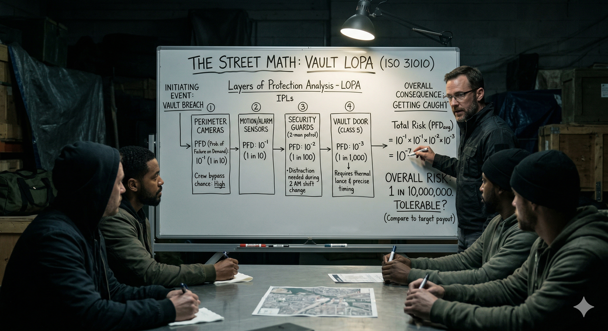

FADE IN: A dimly lit warehouse. A single bulb hangs over a folding table covered in blueprints. FRANK (50s, silver hair, meticulous, speaks like a professor) stands at the head. Around the table: NINA (30s, tech specialist), DARIUS (40s, muscle), and PETE (20s, the driver, nervous). FRANK (tapping the blueprint) The target is a private vault in the basement of the Meridian Building. Contents: bearer bonds, estimated value two point four million. But before anyone gets excited, we need to talk about why we're probably NOT doing this job. PETE Wait, what? FRANK I said probably. Let's do the math first.
FRANK In Layers of Protection Analysis, everything starts with an Initiating Event. That's the thing that kicks off the scenario. For us, the initiating event is: we attempt to breach the building. He writes on a whiteboard: FRANK (CONT'D) The frequency of the initiating event is once — because we're only doing this once. So we set it at 1.0. One attempt. NINA And then? FRANK And then we hit the protection layers. Each one is an Independent Protection Layer — an IPL. Each one has a Probability of Failure on Demand — a PFD. Our job is to calculate whether the overall probability of getting caught is low enough to be... tolerable. DARIUS What's tolerable? FRANK Less than one in ten thousand. If the math says our chance of getting caught is higher than that, we walk away. No exceptions.
FRANK Layer one: the camera system. Sixteen cameras, full coverage, monitored by a security company off-site. He looks at Nina. FRANK (CONT'D) Nina, what's the PFD? NINA I can loop the feeds for approximately 45 minutes using a signal intercept on their wireless backhaul. But there's a 1-in-20 chance the security company notices the loop — they run random spot checks. FRANK So the PFD — the probability that this layer FAILS to stop us — is 19 out of 20. We get through 95% of the time. But the probability it CATCHES us is 1 in 20. We write that as 0.05. He writes: IPL 1 (Cameras) — PFD = 5 × 10⁻² FRANK (CONT'D) But remember — we need the layer to FAIL for us to succeed. So from our perspective, 0.95 is our pass-through rate. From the security's perspective, 0.05 is their detection rate.
FRANK Layer two: two armed guards. One in the lobby, one patrolling floors. Twelve-minute rotation cycle. DARIUS I can handle the guards. FRANK I know you can. But "handling" isn't the question. The question is: what's the probability they detect us despite our countermeasures? He thinks. FRANK (CONT'D) We enter during the rotation gap — a 3-minute window. If our timing is perfect, detection probability is about 1 in 50. But timing depends on external factors — elevator delays, bathroom breaks, radio checks. Realistically, I'd put detection at 1 in 25. He writes: IPL 2 (Guards) — PFD = 4 × 10⁻² NINA That's pretty good. FRANK Individually, yes. But LOPA doesn't care about individual layers. It cares about the product.
FRANK Layer three: the vault itself. Reinforced steel, electronic keypad with biometric backup, time-lock that only opens during business hours. PETE So we go during business hours? FRANK No. Nina bypasses the time-lock remotely. But the biometric is the problem. NINA I've got a workaround — a cloned fingerprint from the building manager's gym membership card. It's not perfect. I'd give it a 70% chance of working on the first try, 85% within three tries. FRANK And if it fails all three times? NINA The system locks out and triggers a silent alarm. Response time: four minutes. FRANK So the probability this layer stops us — detection via lockout and alarm — is about 15%. Or 1.5 × 10⁻¹. He writes: IPL 3 (Vault Door) — PFD = 1.5 × 10⁻¹
FRANK Layer four: even if we get into the vault, there's a pressure-sensitive floor mat inside. Step on it wrong, silent alarm triggers. Different system from the vault lockout — independent circuit. DARIUS Can we disable it? NINA I can identify the circuit, but I can't guarantee I'll find it before someone steps on it. I'd say 1 in 10 chance it catches us. FRANK So PFD = 1 × 10⁻¹. He writes: IPL 4 (Pressure Alarm) — PFD = 1 × 10⁻¹ FRANK (CONT'D) Now. The critical principle of LOPA: each layer must be INDEPENDENT. If the cameras and the pressure alarm run on the same system, they're not independent — one failure could take out both, or one success could catch us twice. But they're on separate circuits, separate monitoring. So we can multiply.
Frank steps back and looks at the whiteboard. FRANK Here's the LOPA calculation. The overall probability of getting caught is the initiating event frequency times the product of each layer's detection probability. He writes: FRANK (V.O.) P(caught) = f(IE) × PFD₁ × PFD₂ × PFD₃ × PFD₄ P(caught) = 1.0 × 0.05 × 0.04 × 0.15 × 0.10 He calculates step by step. FRANK (CONT'D) 0.05 times 0.04 is 0.002. Times 0.15 is 0.0003. Times 0.10 is 0.00003. That's 3 × 10⁻⁵. Or about 1 in 33,000. The room is silent. PETE That's... really low. FRANK It's below our threshold of 1 in 10,000. Mathematically, the risk is tolerable. DARIUS So we're doing it? FRANK (holding up a finger) I said mathematically. We haven't stress-tested the assumptions yet.
FRANK LOPA requires us to verify that each layer is truly independent and that our PFD estimates are conservative. Let's challenge them. He points to each layer. FRANK (CONT'D) Cameras: Nina, what if they've upgraded to AI-based anomaly detection since your last recon? NINA (pausing) That would change the PFD from 0.05 to maybe 0.20. FRANK Guards: what if they've added a third guard we don't know about? DARIUS Detection goes from 0.04 to maybe 0.10. FRANK Let's recalculate with degraded assumptions. 1.0 times 0.20 times 0.10 times 0.15 times 0.10. He writes: FRANK (CONT'D) 0.20 times 0.10 is 0.02. Times 0.15 is 0.003. Times 0.10 is 0.0003. That's 3 × 10⁻⁴. Or 1 in 3,333. PETE That's above the threshold. FRANK Exactly. Under degraded assumptions, the risk is no longer tolerable. Which means our decision depends entirely on the quality of our intelligence.
FRANK So here's where we are. Best case: 1 in 33,000. Worst case: 1 in 3,333. The truth is somewhere in between. He draws a line between the two numbers. FRANK (CONT'D) LOPA gives us a framework, not a guarantee. If we can verify — with fresh recon — that the cameras haven't been upgraded and there's no third guard, we're in the tolerable zone. If we can't verify, we're gambling. NINA I can do another site visit. Two days. FRANK Do it. And while you're there, check for any fifth layer we might have missed. A hidden sensor, a secondary vault lock, anything. Because in LOPA, the layer you don't know about is the one that gets you caught. DARIUS And if everything checks out? FRANK Then the math says go. And I trust the math more than I trust my gut. He caps the marker.
The team studies the whiteboard in silence. Frank leans against the wall. FRANK Every security system in the world is built on layers. Banks, nuclear plants, data centers — they all use the same principle. Stack enough independent barriers and the probability of a breach drops to near zero. PETE And we're trying to beat those layers. FRANK We're trying to QUANTIFY them. There's a difference. A thief who doesn't do LOPA just sees a vault and hopes for the best. We see four independent protection layers with measurable failure probabilities and a calculable overall risk. He taps the whiteboard. FRANK (CONT'D) ISO 31010, Section B.4.4. Layers of Protection Analysis. Chemical plants use it to prevent explosions. We use it to decide whether a job is worth the risk. NINA And if the recon comes back bad? FRANK Then we walk. Because the math walked first. He turns off the light over the table. The blueprints disappear into shadow. FADE OUT. — END —